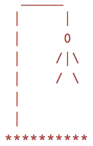
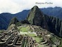

Well, hello there!
It seems you've found me. My name is Nicholas Neumann-Chun, though I often use the moniker "Babelthuap" online. This purpose of this page is to show off the various projects I've worked on and, I suppose, to give you a general flavor for the person who made them. So far, there is:
-

A Game of Hangman
part of the pre-work for Coding House
-

Some experimentation with HTML and CSS
proof-of-concept things for the new CTTC website
-
Contributions I've made to the new CTTC website
The site's not finished yet, but I'll link to it when it is.
About:

I graduated from Williams College in 2013 with a B.A. in mathematics. I studied many subjects, focusing on math, computer science, physics, and philosophy. There's more on that kind of stuff on my LinkedIn profile.

Last year, from April to August 2014, my brother and I thru-hiked the Appalachian Trail. This improved the quality of my thinking and being in ways I find hard to describe.
Not too long ago, from December 2014 to May 2015, I lived in Cusco, Peru. While there, I volunteered with the Center for Traditional Textiles of Cusco (CTTC), a Peruvian non-profit. I taught English and helped with a wide variety of technical issues. I am currently living in the U.S. and helping the CTTC build a new website.
Right now, October 2015, I'm soon to be a student at Coding House, a four-month, full-immersion coding bootcamp in San Francisco. I'm super-duper excited, to put it mildly.
Miscellaneous...
These are some websites I like:
- Hacker News
- XKCD webcomic
- Buttersafe webcomic
- Letters of Note
- Detexify (very useful when writing TeX)
- Random.org (true random number generator)
- ZPacks (Cuben Fiber galore)
- Hyperlite Mountain Gear (even more Cuben Fiber!)
These are some of the things I care about, in no particular order:
|
|